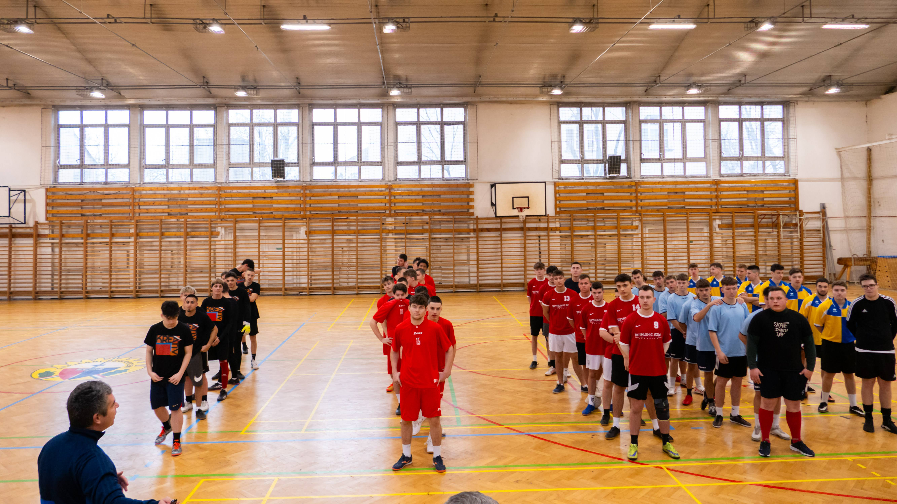

Miért is jó sportolni?
-
Kitartás
Sportolás során tanulunk kitartani a nehézségekkel szemben, melynek eredményeképpen fejlődik a kitartásunk és az elszántságunk az élet más területein is.
-
Önfegyelem
A sport gyakorlása során megtanuljuk kontrollálni cselekedeteinket és döntéseinket, ezáltal fejlődik az önfegyelem és az önkontroll képessége.
-
Egészség
Sportolás által megőrizhetjük fizikai és mentális egészségünket, erősítjük szív- és érrendszerünket, valamint javítjuk hangulatunkat és stressztűrő képességünket.
-
Csapatszellem
A csapatban való részvétel során megtanuljuk együttműködni másokkal, támogatni és motiválni egymást, ezáltal erősítve a csapatszellemet és az összetartozás érzését.



-
Kitartás
Sportolás során tanulunk kitartani a nehézségekkel szemben, melynek eredményeképpen fejlődik a kitartásunk és az elszántságunk az élet más területein is.
-
Önfegyelem
A sport gyakorlása során megtanuljuk kontrollálni cselekedeteinket és döntéseinket, ezáltal fejlődik az önfegyelem és az önkontroll képessége.
-
Egészség
Sportolás által megőrizhetjük fizikai és mentális egészségünket, erősítjük szív- és érrendszerünket, valamint javítjuk hangulatunkat és stressztűrő képességünket.
-
Csapatszellem
A csapatban való részvétel során megtanuljuk együttműködni másokkal, támogatni és motiválni egymást, ezáltal erősítve a csapatszellemet és az összetartozás érzését.
Kézilabda
A Mechwart Kézilabda Órák kiváló lehetőséget kínálnak minden korosztálynak, hogy elsajátítsák a kézilabdaimg alapjait és fejlesszék képességeiket ebben az izgalmas sportágban. Az órák középpontjában a szakértő trénerek állnak, akik szenvedéllyel és elkötelezettséggel vezetik a csoportokat az edzések során.
Az órák célja nemcsak a technikai készségek fejlesztése, hanem a játék iránti szeretet és a csapatmunka erősítése is. A kézilabda nemcsak egy sport, hanem egy közösségépítő tevékenység is, amely összehozza az embereket és erősíti a barátságokat.
Az órák minden szinten nyitottak, kezdőktől a haladókig, így mindenki megtalálhatja a számára megfelelő kihívást és fejlődési lehetőséget. Legyen szó gyakorló játékosokról vagy csak a sportágba való belekóstolásról, a Mechwart Kézilabda Órák mindenkit szeretettel várnak!
Labdarúgás
A Labdarúgó Szakkör kitűnő lehetőséget kínál minden diáknak, hogy megismerjék a labdarúgás alapjait és tovább fejlesszék tudásukat ebben a népszerű sportágban. Az órákat tapasztalt edzők vezetik, akik nagy szenvedéllyel és elkötelezettséggel ösztönzik a gyerekeket, hogy kihozzák magukból a legtöbbet minden edzésen.
A szakkör célja nem csupán a labdarúgó készségek javítása, hanem a sport iránti szeretet megalapozása és a csapatszellem erősítése is. A labdarúgás több, mint egy játék; egy olyan közösségépítő eszköz, ami összehozza a diákokat, és megerősíti köztük a baráti kapcsolatokat.
A szakkör minden szintű résztvevő számára nyitott, a kezdőktől a tapasztalt játékosokig, így mindenki találhat magának megfelelő kihívást és lehetőséget a fejlődésre. Akár már van tapasztalata valakinek a labdarúgásban, akár csak szeretne belekóstolni ebbe a sportba, a Labdarúgó Szakkör mindenkinek szeretettel nyitott ajtókat kínál.
Röplabda
A Röplabda Klub kiváló lehetőséget teremt a diákok számára, hogy belevetik magukat a röplabda izgalmas világába, megtanulják ennek a dinamikus csapatsportnak az alapvető technikáit, és kiteljesíthessék képességeiket. Az oktatás során különös figyelmet fordítunk arra, hogy minden résztvevő megtapasztalhassa a játék örömeit, miközben komoly hangsúlyt helyezünk a sportág technikai és taktikai elemeinek elsajátítására.
A szakkörünk nem csak a sportbeli készségek fejlesztésére összpontosít, hanem arra is törekszik, hogy a diákok megtanulják az együttműködés és a csapatmunka fontosságát, valamint hogy növelje az önbizalmukat és a fizikai állóképességüket. A röplabda egy kiváló módja annak, hogy az ifjúság aktívan töltse szabadidejét, miközben erős, egészséges közösségi kapcsolatokat épít.
Az óráink nyitva állnak minden érdeklődő számára, kezdőtől a tapasztalt játékosig, így garantáljuk, hogy mindenki megtalálja a neki megfelelő helyet és kihívást klubunkban. A Röplabda Klub egy befogadó és barátságos hely, ahol a diákok nem csupán a röplabdázás művészetét sajátíthatják el, hanem értékes életleckéket is tanulhatnak a kitartásról, az együttműködésről és a sport szellemiségéről.